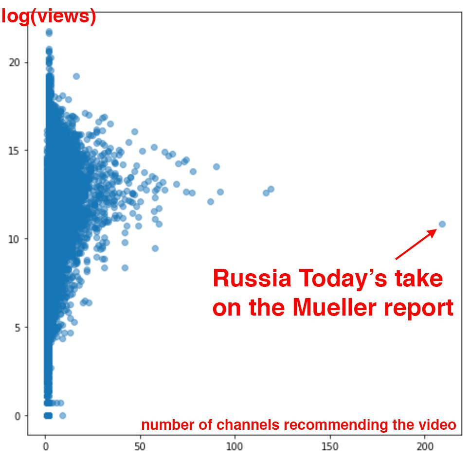

Update: This post was expanded into a paper, Reliance on metrics is a fundamental challenge for AI, by Rachel Thomas and David Uminsky, which was accepted to the Ethics of Data Science Conference 2020 and to Cell Patterns. The paper version includes more grounding in previous academic work and a framework towards mitigating these harms.
Goodhart’s Law states that “When a measure becomes a target, it ceases to be a good measure.” At their heart, what most current AI approaches do is to optimize metrics. The practice of optimizing metrics is not new nor unique to AI, yet AI can be particularly efficient (even too efficient!) at doing so.
This is important to understand, because any risks of optimizing metrics are heightened by AI. While metrics can be useful in their proper place, there are harms when they are unthinkingly applied. Some of the scariest instances of algorithms run amok (such as Google’s algorithm contributing to radicalizing people into white supremacy, teachers being fired by an algorithm, or essay grading software that rewards sophisticated garbage) all result from over-emphasizing metrics. We have to understand this dynamic in order to understand the urgent risks we are facing due to misuse of AI.

- Any metric is just a proxy for what you really care about
- Metrics can, and will, be gamed
- Metrics tend to overemphasize short-term concerns
- Many online metrics are gathered in highly addictive environments
- Metrics are most likely to be useful when they are treated as one piece of a bigger picture
We can’t measure the things that matter most
Metrics are typically just a proxy for what we really care about. The paper Does Machine Learning Automate Moral Hazard and Error? covers an interesting example: the researchers investigate which factors in someone’s electronic medical record are most predictive of a future stroke. However, the researchers found that several of the most predictive factors (such as accidental injury, a benign breast lump, or colonoscopy) don’t make sense as risk factors for stroke. So, just what is going on? It turned out that the model was just identifying people who utilize health care a lot. They didn’t actually have data of who had a stroke (a physiological event in which regions of the brain are denied new oxygen); they had data about who had access to medical care, chose to go to a doctor, were given the needed tests, and had this billing code added to their chart. But a number of factors influence this process: who has health insurance or can afford their co-pay, who can take time off of work or find childcare, gender and racial biases that impact who gets accurate diagnoses, cultural factors, and more. As a result, the model was largely picking out people who utilized healthcare versus who did not.
This an example of the common phenomenon of having to use proxies: You want to know what content users like, so you measure what they click on. You want to know which teachers are most effective, so you measure their students test scores. You want to know about crime, so you measure arrests. These things are not the same. Many things we do care about can not be measured. Metrics can be helpful, but we can’t forget that they are just proxies.
As another example, Google used hours spent watching YouTube as a proxy for how happy users were with the content, writing on the Google blog that “If viewers are watching more YouTube, it signals to us that they’re happier with the content they’ve found.” Guillaume Chaslot, an AI engineer who formerly worked at Google/YouTube, shares how this had the side effect of incentivizing conspiracy theories, since convincing users that the rest of the media is lying kept them watching more YouTube.
Metrics can, and will, be gamed
It is almost inevitable that metrics will be gamed, particularly when they are given too much power. One week this spring, Chaslot collected 84,695 videos from YouTube and analyzed the number of views and the number of channels from which they were recommended. This is what he found (also covered in the Washington Post):

The state-owned media outlet Russia Today was an extreme outlier in how much YouTube’s algorithm had selected it to be recommended by a wide-variety of other YouTube channels. Such algorithmic selections, which begin autoplaying as soon as your current video is done, account for 70% of the time that users spend on YouTube. This chart strongly suggests that Russia Today has in some way gamed YouTube’s algorithm. Platforms are rife with attempts to game their algorithms, to show up higher in search results or recommended content, through fake clicks, fake reviews, fake followers, and more.
Automatic essay grading software focuses primarily on metrics like sentence length, vocabulary, spelling, and subject-verb agreement, but is unable to evaluate aspects of writing that are hard to quantify, such as creativity. As a result, gibberish essays randomly generated by computer programs to contain lots of sophisticated words score well. Essays from students in mainland China, which do well on essay length and sophisticated word choice, received higher scores from the algorithms than from expert human graders, suggesting that these students may be using chunks of pre-memorized text.
As USA education policy began over-emphasizing student test scores as the primary way to evaluate teachers, there have been widespread scandals of teachers and principals cheating by altering students scores, in Georgia, Indiana, Massachusetts, Nevada, Virginia, Texas, and elsewhere. One consequence of this is that teachers who don’t cheat may be penalized or even fired (when it appears student test scores have dropped to more average levels under their instruction). When metrics are given undue importance, attempts to game those metrics become common.
Metrics tend to overemphasize short-term concerns
It is much easier to measure short-term quantities: click through rates, month-over-month churn, quarterly earnings. Many long-term trends have a complex mix of factors and are tougher to quantify. What is the long-term impact on user trust of having your brand associated with promoting pedophilia, white supremacy, and flat-earth theories? What is the long-term impact on hiring to be the subject of years worth of privacy scandals, political manipulation, and facilitating genocide?
Simply measuring what users click on is a short-term concern, and does not take into account factors like the potential long-term impact of a long-form investigative article which may have taken months to research and which could help shape a reader’s understanding of a complex issue and even lead to significant societal changes.
A recent Harvard Business Review article looked at Wells Fargo as a case study of how letting metrics replace strategy can harm a business. After identifying cross-selling as a measure of long-term customer relationships, Wells Fargo went overboard emphasizing the cross-selling metric: intense pressure on employees combined with an unethical sales culture led to 3.5 million fraudulent deposit and credit card accounts being opened without customers’ consent. The metric of cross-selling is a much more short-term concern compared to the loftier goal of nurturing long-term customer relationships. Overemphasizing metrics removes our focus from long-term concerns such as our values, trust and reputation, and our impact on society and the environment, and myopically focuses on the short-term.
Many metrics gather data of what we do in highly addictive environments
It matters which metrics we gather and in what environment we do so. Metrics such as what users click on, how much time they spend on sites, and “engagement” are heavily relied on by tech companies as proxies for user preference, and are used to drive important business decisions. Unfortunately, these metrics are gathered in environments engineered to be highly addictive, laden with dark patterns, and where financial and design decisions have already greatly circumscribed the range of options.
Zeynep Tufekci, a professor at UNC and regular contributor to the New York Times, compares recommendation algorithms (such as YouTube choosing which videos to auto-play for you and Facebook deciding what to put at the top of your newsfeed) to a cafeteria shoving junk food into children’s faces. “This is a bit like an autopilot cafeteria in a school that has figured out children have sweet teeth, and also like fatty and salty foods. So you make a line offering such food, automatically loading the next plate as soon as the bag of chips or candy in front of the young person has been consumed.” As those selections get normalized, the output becomes ever more extreme: “So the food gets higher and higher in sugar, fat and salt – natural human cravings – while the videos recommended and auto-played by YouTube get more and more bizarre or hateful.” Too many of our online environments are like this, with metrics capturing that we love sugar, fat, and salt, not taking into account that we are in the digital equivalent of a food desert and that companies haven’t been required to put nutrition labels on what they are offering. Such metrics are not indicative of what we would prefer in a healthier or more empowering environment.
When Metrics are Useful
All this is not to say that we should throw metrics out altogether. Data can be valuable in helping us understand the world, test hypotheses, and move beyond gut instincts or hunches. Metrics can be useful when they are in their proper context and place. One way to keep metrics in their place is to consider a slate of many metrics for a fuller picture (and resist the temptation to try to boil these down to a single score). For instance, knowing the rates at which tech companies hire people from under-indexed groups is a very limited data point. For evaluating diversity and inclusion at tech companies, we need to know comparative promotion rates, cap table ownership, retention rates (many tech companies are revolving doors driving people from under-indexed groups away with their toxic cultures), number of harassment victims silenced by NDAs, rates of under-leveling, and more. Even then, all this data should still be combined with listening to first-person experiences of those working at these companies.
Columbia professor and New York Times Chief Data Scientist Chris Wiggins wrote that quantitative measures should always be combined with qualitative information, “Since we can not know in advance every phenomenon users will experience, we can not know in advance what metrics will quantify these phenomena. To that end, data scientists and machine learning engineers must partner with or learn the skills of user experience research, giving users a voice.”
Another key to keeping metrics in their proper place is to keep domain experts and those who will be most impacted closely involved in their development and use. Surely most teachers could have foreseen that evaluating teachers primarily on the standardized test scores of their students would lead to a host of negative consequences.
I am not opposed to metrics; I am alarmed about the harms caused when metrics are overemphasized, a phenomenon that we see frequently with AI, and which is having a negative, real-world impact. AI running unchecked to optimize metrics has led to Google/YouTube’s heavy promotion of white supremacist material, essay grading software that rewards garbage, and more. By keeping the risks of metrics in mind, we can try to prevent these harms.